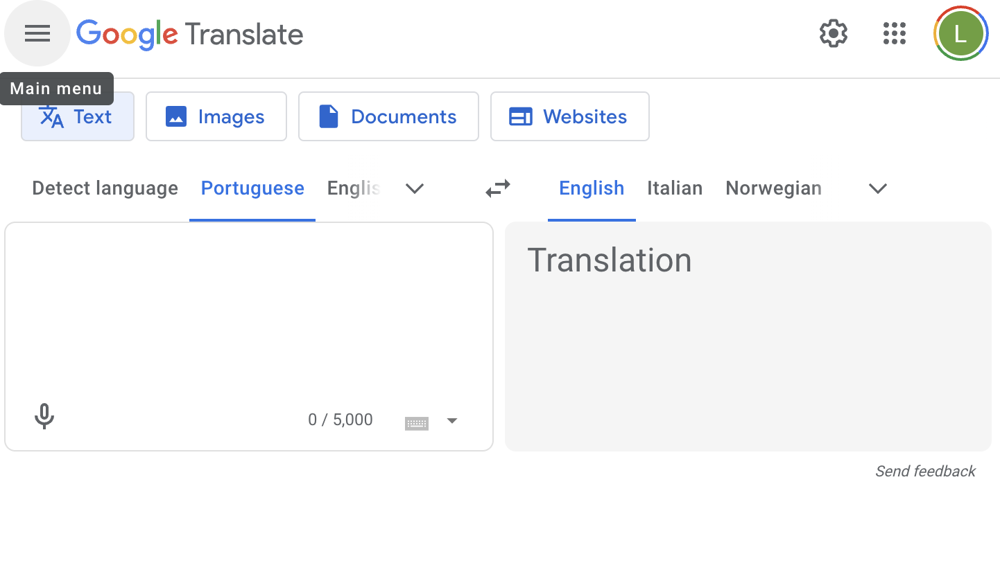
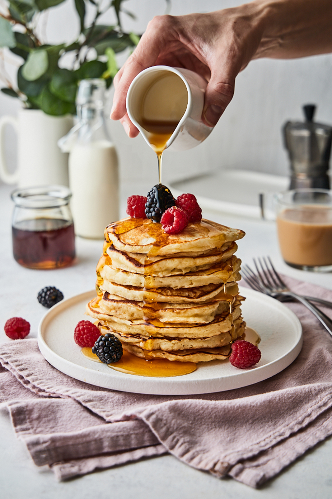
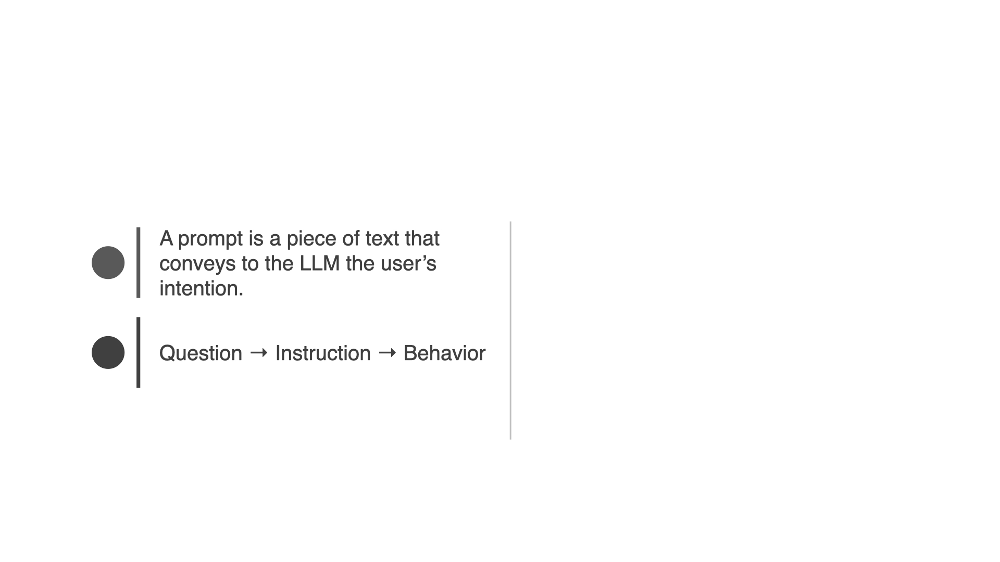
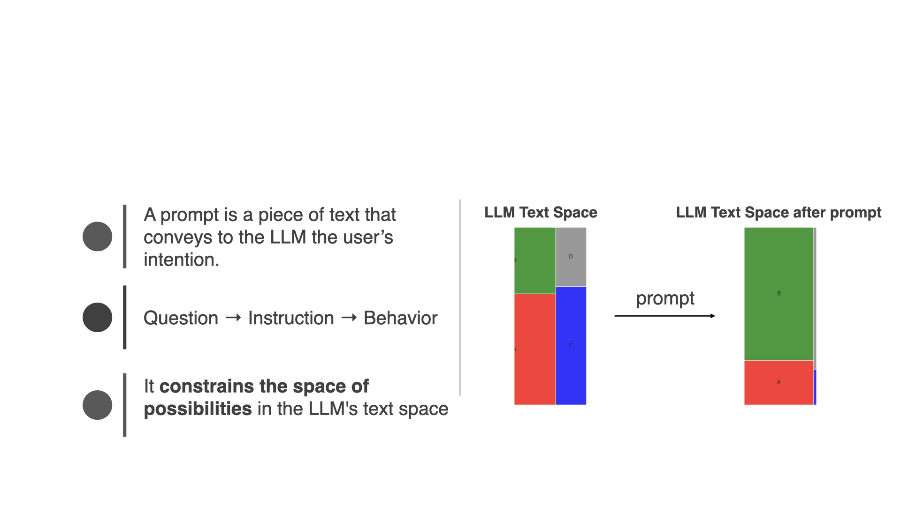
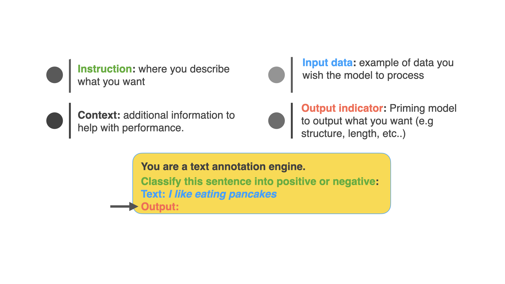

background-image: url(../notebooks/assets-resources/oreilly-background-template.png) --- # Table of Contents 1. Introduction 2. Deep-dive --- class: center, middle # Large Language Models --- # Large Language Models Large Language Models Predict the Next Word <img src="../notebooks/assets-resources/llm_predicts_pancakes.png" alt="LLM Predicts Pancakes" style="width: 600px;"/> --- # Applications of Large Language Models - Conversational ChatBots <img src="../notebooks/assets-resources/chatgpt-demo.png" alt="ChatGPT Demo" style="width: 600px;"/> --- # Applications of Large Language Models - Search Engines --- # Applications of Large Language Models - Translation  -- - And so much more from Q&A over PDFs to personalized tutoring. --- # Transformers <span style="color: grey">(Super quickly) </span> -- They generate text one word at a time. For example: -- 1. Input: "I love eating ________" -- 2. <p>Tokenize: <span style="color: purple;">I</span> <span style="color: green;">love</span> <span style="color: orange;">eating</span></p> -- 3. Embedding: [0.78, 1.45, 0.35 .....] -- 4. Positional encoding: <p><span style="color: purple;">1. I</span> <span style="color: green;">2. love</span> <span style="color: orange;">3. eating</span></p> -- 5. <div>Attention: Understands context → "I" (Lucas) and "love": things that Lucas loves. Cross references that against things that "Lucas" eats leading to ... → "PANCAKES!!!"</div> --  --- # Transformers <img src="../notebooks/assets-resources/transformers-architecture.png" alt="Transformers Architecture" style="width: 800px;"/> <p style="font-size: 14px; margin-top: 10px;"> <sup>[1]</sup><a href="https://www.youtube.com/watch?v=qaWMOYf4ri8&t=1959s">What are Transformers and How do They Work? By Serrano Academy</a> </p> --- # Q&A & Summary - __LLMs predict the next word__ and generate human-like text. - __LLMs power diverse applications__ including conversational chatbots, search engines, and translation services, demonstrating their versatility in handling various language tasks. - __Transformer architecture__ processes text sequentially, utilizing mechanisms like tokenization, embedding, positional encoding, and attention to understand context and generate relevant outputs. - __Advantages of LLMs__: LLMs are multi-taskers capable of content generation, question answering, and more, with the ability to be fine-tuned for specific tasks and scale effectively to handle large datasets and complex models. - __Benefits and Limitations__: Despite their benefits (multi-tasking, fine-tuning etc..), LLMs have limitations, including a fixed knowledge base, lack of true understanding, potential for misuse, and ethical concerns around data privacy and inherent biases. - <span style="color: grey">Optional Exercise</span> - <span style="color: grey">Set up your OpenAI API key and prepare for the practical demos</span> --- class: center, middle # Introduction to the ChatGPT API --- # Introduction to the ChatGPT API - The ChatGPT API allows you to use OpenAI's models to generate human-like text based on the input you provide. -- - Basic structure of calling the API: ```python from openai import OpenAI client = OpenAI() def get_response(prompt_question): response = client.chat.completions.create( model="gpt-3.5-turbo-0125", messages=[{"role": "system", "content": "You are a helpful research and programming assistant"}, {"role": "user", "content": prompt_question}] ) return response.choices[0].message.content ``` -- - Required parameters: `model`, `messages` <p style="font-size: 14px; margin-top: 10px;"> <sup>[2]</sup><a href="https://platform.openai.com/docs/introduction">OpenAI Docs</a> </p> --- # Prompt Basics <img src="../notebooks/assets-resources/prompt-basics/prompt-basics.001.jpeg" width="800px" style="margin-left: -20px; margin-top: -40px;"> --- # Prompt Basics  --- # Prompt Basics  --- # Prompt Basics ## Components of the prompt <img src="../notebooks/assets-resources/prompt-basics/prompt-basics.004.jpeg" width="800px" style="margin-left: -20px; margin-top: -40px;"> --- # Prompt Basics ## Components of the prompt: <span style="color: green">instruction</span> <img src="../notebooks/assets-resources/prompt-basics/prompt-basics.005.jpeg" width="800px" style="margin-left: -20px; margin-top: -40px;"> --- # Prompt Basics ## Components of the prompt: <span style="color: green">instruction</span>, <span style="color: black">context</span> <img src="../notebooks/assets-resources/prompt-basics/prompt-basics.006.jpeg" width="800px" style="margin-left: -20px; margin-top: -40px;"> --- # Prompt Basics ## Components of the prompt: <span style="color: green">instruction</span>, <span style="color: black">context</span> <span style="color: #0d8eb9">input data</span> <img src="../notebooks/assets-resources/prompt-basics/prompt-basics.007.jpeg" width="800px" style="margin-left: -20px; margin-top: -40px;"> --- # Prompt Basics ## Components of the prompt: <span style="color: green">instruction</span>, <span style="color: black">context</span> <span style="color: #0d8eb9">input data</span> , <span style="color: red">output indicator</span>  --- # Q&A & Summary - __Prompts__ are the inputs to LLMs__ - __Prompts__ allow users to __guide the model's responses__ and generate specific outputs. - __Components of a prompt:__ instruction, context, input data, and output indicator. - __ChatGPT API: __ programatic access to GPT models by OpenAI - __ChatGPT API: __required parameters: `model`, `messages` - <span style="color: grey"> __Optional Exercise During Q&A__ </span> ``` Create a prompt that summarizes a piece of text in a format/structure of your choice. ``` --- # Prompt Engineering Guide -- ## What is Prompt Engineering? -- - Prompt engineering: Discipline for engineering prompts -- - The goal is to __design good prompts__ -- - <span style="background-color: #FFDB58"> Process for developing prompts that yield high performance in a task. </span> --- # Prompt Engineering Guide ## OpenAI's Guide for Building Good Prompts -- - __Strategy 1: Write clear instructions__ -- - <span style="color: red">Bad: </span> Who’s president? -- - <span style="color: green">Better:</span> Who was the president of Mexico in 2021? <p style="font-size: 14px; margin-top: 10px;"> <sup>[3]</sup><a href="https://platform.openai.com/docs/guides/prompt-engineering">OpenAI's Prompt Engineering Guide</a> </p> --- # Prompt Engineering Guide ## OpenAI's Guide for Building Good Prompts - __Strategy 2: Provide reference text__ -- <img src="../notebooks/assets-resources/prompt-strategy-2.png" alt="Prompt Strategy 2" style="width: 600px;"/> <p style="font-size: 14px; margin-top: 10px;"> <sup>[3]</sup><a href="https://platform.openai.com/docs/guides/prompt-engineering">OpenAI's Prompt Engineering Guide</a> </p> --- # Prompt Engineering Guide ## OpenAI's Guide for Building Good Prompts - __Strategy 3: Break tasks into subtasks__ -- <img src="../notebooks/assets-resources/prompt-strategy3.png" alt="Prompt Strategy 3" style="width: 600px;"/> <p style="font-size: 14px; margin-top: 10px;"> <sup>[3]</sup><a href="https://platform.openai.com/docs/guides/prompt-engineering">OpenAI's Prompt Engineering Guide</a> </p> --- # Prompt Engineering Guide ## OpenAI's Guide for Building Good Prompts - __Strategy 4: Give the model time to think__ -- <img src="../notebooks/assets-resources/prompt-strategy4.png" alt="Prompt Strategy 4" style="width: 400px;"/> --- # Prompt Engineering Guide ## OpenAI's Guide for Building Good Prompts - __Strategy 5: Use external tools__ -- <img src="../notebooks/assets-resources/prompt-strategy5.png" alt="Prompt Strategy 5" style="width: 600px;"/> <p style="font-size: 14px; margin-top: 10px;"> <sup>[3]</sup><a href="https://platform.openai.com/docs/guides/prompt-engineering">OpenAI's Prompt Engineering Guide</a> </p> --- # Prompt Engineering Guide ## OpenAI's Guide for Building Good Prompts - __Strategy 6: Test changes systematically__ -- <img src="../notebooks/assets-resources/prompt-strategy6.png" alt="Prompt Strategy 6" style="width: 400px;"/> <p style="font-size: 14px; margin-top: 10px;"> <sup>[3]</sup><a href="https://platform.openai.com/docs/guides/prompt-engineering">OpenAI's Prompt Engineering Guide</a> </p> --- # Q&A & Summary - __Prompt Engineering__ is the discipline for engineering prompts - __Prompt Engineering__ aims to design prompts that yield high performance across tasks. - __OpenAI's Guide for Building Good Prompts__ includes strategies like writing clear instructions, providing reference text, breaking tasks into subtasks, giving the model time to think, using external tools, and testing changes systematically. - <span style="color: grey"> __Optional Exercise During Q&A__ </span> ``` Craft a prompt that can answer questions about a specific topic. Remember to incorporate the strategies discussed. ```